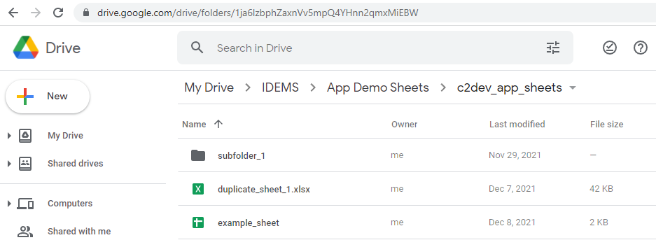

Deployments¶
All user-generated content are stored within deployments, alongside app-specific settings such as remote data sources and app strings.
Create Deployment¶
All deployments are stored in the .idems_app/deployments folder, and new deployments can be added by calling the script:
yarn workflow deployment create
| Option | Details |
|---|---|
| New Local Deployment | A new standalone deployment, will have a clean configuration. This could be an entirely new app, or related to another deployment but managed independently |
| Extend Existing Local | Will inherit the configuration of another deployment for modification. This could be a country-specific or A/B testing version |
Change Deployment¶
To set the active deployment for the workspace run the following script:
yarn workflow deployment set
Alternative a name can be provided to select directly
yarn workflow deployment set example
Tip
If the deployment name contains spaces use quotation marks when specifying, e.g. yarn workflow deployment set "another example"
Customise Configuration¶
When a deployment is created a default configuration will be created in the .idems_app/deployments folder. E.g. for a deployment named example
import { generateDeploymentConfig } from "scripts";
const config = generateDeploymentConfig("example");
// Main Deployment config
config.google_drive = {
sheets_folder_id: "",
assets_folder_id: "",
}
};
// Deployment app config overrides
app_config.APP_HEADER_DEFAULTS.title = 'Example Deployment'
app_config.APP_SIDEMENU_DEFAULTS.title = 'Example Deployment'
export default config;
A full list of general configuration options can be found in packages/data-models/deployment.model.ts
A full list of app_config and their default values can be found in packages/data-models/appConfig.ts
Any configuration changes can be applied by setting the deployment
yarn workflow deployment set [name]
The final processed config can be found in the local config.json file, e.g. .idems_app/deployments/example/config.json
Google Drive Management¶
The deployment configuration requires IDs for two created Google Drive folders, one for template sheets and one for global assets.
The folders should again be named without spaces or special characters, and once created their unique IDs can be found by looking at the end of the URL bar when navigating inside the folder on Google Drive.
E.g. 1ja6lzbphZaxnVv5mpQ4YHnn2qmxMiEBW

GitHub Management¶
Deployments are designed to have their content managed via external github repos. To configure a deployment to sync with an external git repository, first create the repo on github and then provide the url within the git.content_repo configuration object
const config: IDeploymentConfig = {
name: "example",
git: {
content_repo: "https://github.com/my-org/my-git-repo",
},
Import Existing¶
If an external content repo already exists it is possible to directly import into the local workspace, instead of first creating a new deployment and then configuring for import.
This can be done via the script
yarn workflow deployment import [url]
You will see the new deployment appear in the .idems_app folder and be available for selection
Sync Content¶
Content from external repos can be synced in the usual way
yarn workflow sync
Push Changes¶
A local repo can have its changes pushed to github by publishing a new release
yarn workflow repo publish
Warning
If multiple authors are updating content and creating releases there is a high probability of conflicts arising.
Open pull requests should be merged before creating new content releases, and running yarn workflow sync to update local content from remotes.
Github Actions¶
Content repos may also wish to configure github actions to support common tasks like building web previews on pull requests, or deploying releases.
Several action templates have been prepared and can be configured using the command
yarn workflow repo actions
Note
Several actions require additional variables configured as Secrets within the Github Repo
See the following link for more information about using Github Secrets
Troubleshooting¶
If for any reason the local content repo gets into a bad/conflicted state, it can be manually resolved by opening the deployment repo in vscode and resolving using git commands.
The content repo can be opened via shortcut yarn workflow repo open
File Encryption¶
In cases where deployments need to share private information, such as API keys or service accounts, a special encryption folder can be used to handle encryption and decryption processes
To setup an encryption folder run
yarn workflow deployment encrypt
This will create a new folder named encrypted inside the deployment folder (if not already existing). It will also populate a private key file used to decrypt data
Warning
The private.key file should NOT be checked into a public repo, and should be backed up securely. If lost, encrypted files will not be able to be decrypted and will have to be regenerated with a new key
With the encryption folder generated any files placed inside the encryption folder will by default be marked for encryption and ignored from associated github repositories. To trigger the encryption process simply run the workflow again
yarn workflow deployment encrypt
Note
With the encryption folder setup anybody will be able to encrypt files using the public.key file, however only people with access to the private.key can decrypt. This can be securely shared with anybody who you wish to provide access to the encrypted files
In order to decrypt files the decryption workflow should be run
yarn workflow deployment decrypt